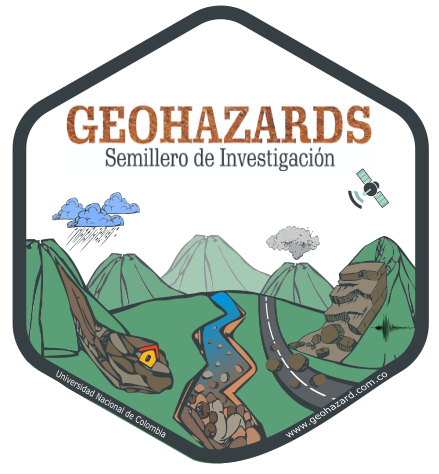
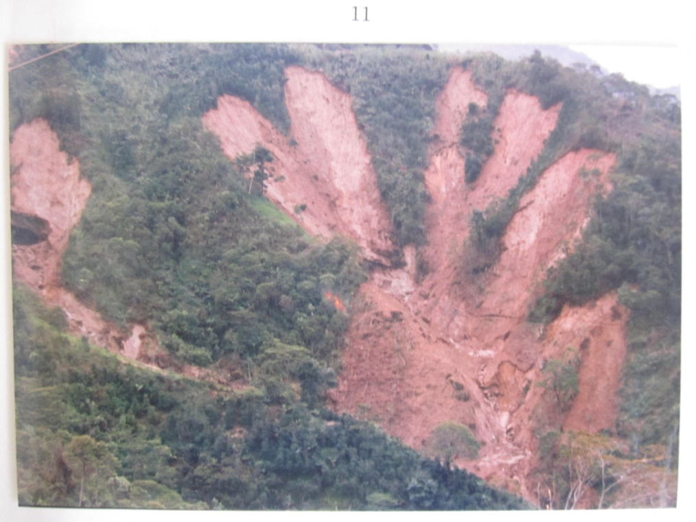
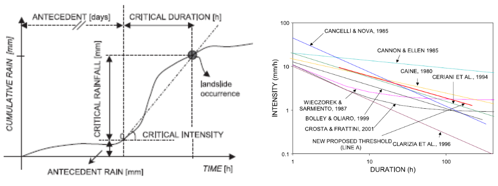
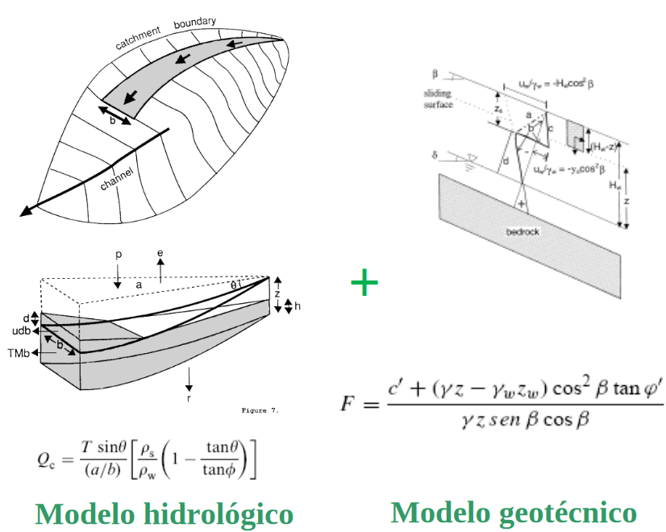
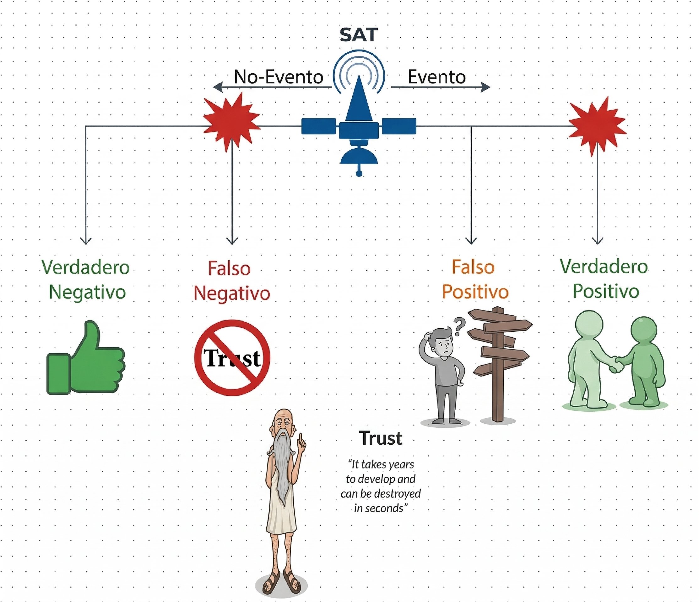
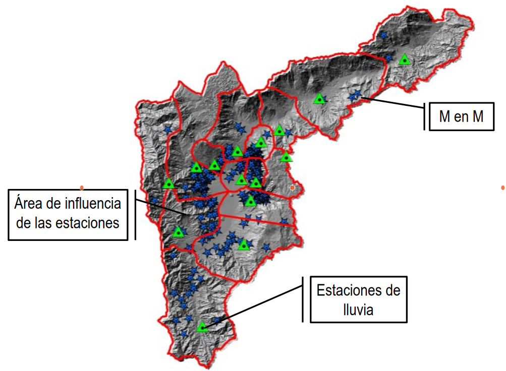
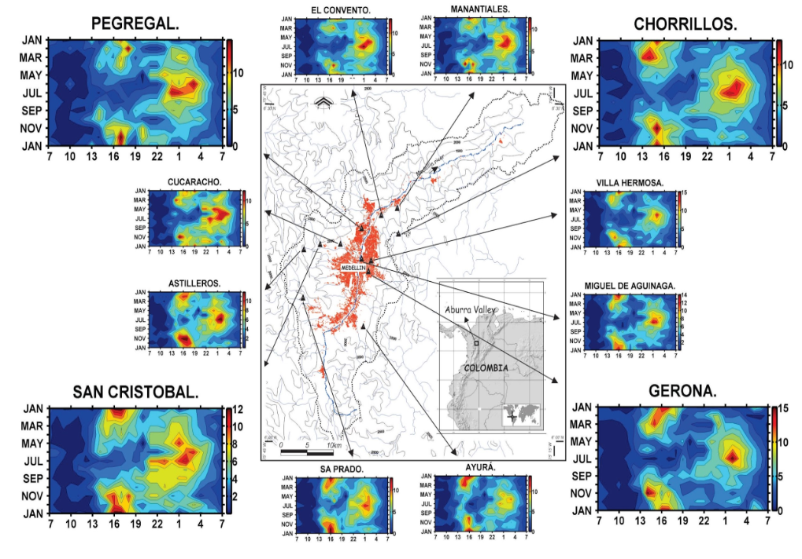
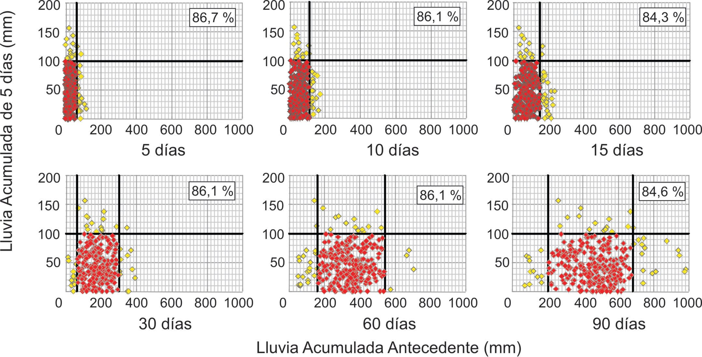
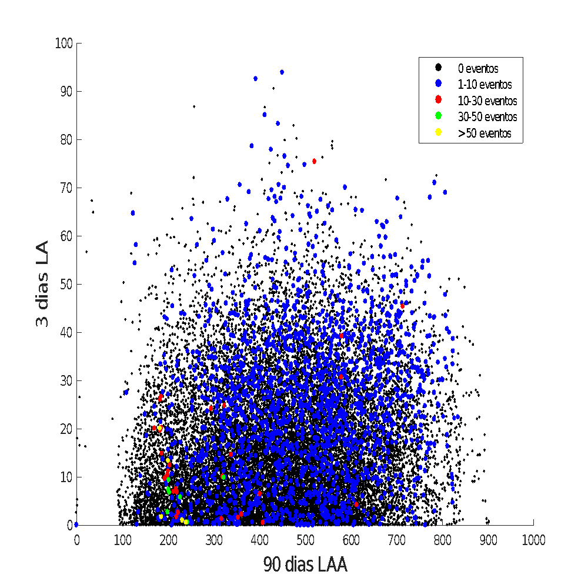

Umbrales de lluvia para la gestión del riesgo por deslizamientos en el trópico
Edier Aristizábal
Universidad Nacional de Colombia

Deslizamientos detonados por lluvia en el trópico

- Alta frecuencia en zonas montañosas tropicales de Colombia y Latinoamérica
- Detonados por lluvias intensas y/o prolongadas
- Generan pérdidas humanas y económicas recurrentes en la región
Margen de Estabilidad

- Largo plazo: susceptibilidad controlada por geología, morfología y cobertura del suelo
- Corto plazo: la lluvia reduce temporalmente el margen de estabilidad hasta superar el umbral de falla
El problema no es lo que llueve, sino lo que se infiltra

Estabilidad de laderas

¿Qué es un umbral de lluvia para deslizamientos?

Umbrales empíricos

- Basados en el análisis estadístico de registros históricos de lluvia y deslizamientos
- Relaciones típicas: Intensidad–Duración (ID) o Duración–Acumulado (DA)
- Prácticos y ampliamente usados; su calidad depende de la completitud del inventario
Umbrales físicos (basados en procesos)

- Incorporan modelos hidrológicos y de estabilidad de laderas
- Requieren parámetros geotécnicos e hidráulicos del suelo
- Mayor capacidad de generalización espacial, pero mayor incertidumbre paramétrica

Evaluación del desempeño de los umbrales en un SAT

Área de influencia: ¿qué dato representa qué ladera?

La asignación espacial entre registros pluviométricos y deslizamientos es fundamental. Un área de influencia mal definida introduce ruido en el análisis y degrada la calidad del umbral obtenido.
¿Cómo llueve en cada región? Variabilidad espacial y temporal

El régimen de lluvias en el trópico es altamente variable en el espacio y el tiempo. Conocer el patrón local de precipitación es indispensable para construir umbrales representativos y confiables.
Definición del evento de lluvia detonante y acumulada

La forma en que se define el evento de lluvia —inicio, duración y fin— afecta directamente la caracterización del umbral. Diferentes criterios de separación de eventos producen umbrales distintos para la misma región.
Lluvia antecedente vs. lluvia acumulada: cada zona es diferente

- En algunas zonas predomina la lluvia antecedente (saturación previa del suelo)
- En otras, la intensidad del evento detonante es el factor clave
- La combinación óptima depende del clima, tipo de suelo y morfología local
La importancia de los No-eventos en la definición de umbrales

- Un umbral sólo tiene sentido si discrimina condiciones con y sin deslizamiento
- Ignorar los No-eventos sobreestima la amenaza y aumenta las falsas alarmas
- Su inclusión mejora significativamente la discriminación estadística del umbral
Desafíos en la aplicación de umbrales en el trópico
- Redes pluviométricas con baja densidad espacial y registros incompletos
- Inventarios de deslizamientos incompletos y con sesgo temporal y espacial
- Alta variabilidad climática del trópico dificulta la regionalización de umbrales
- Necesidad de actualización continua frente al cambio climático
- Integración con modelos de susceptibilidad y exposición para un SAT robusto
¡Gracias!
https://edieraristizabal.github.io/Presentaciones/LandAware2026_Medellin.html
evaristizabalg@unal.edu.co